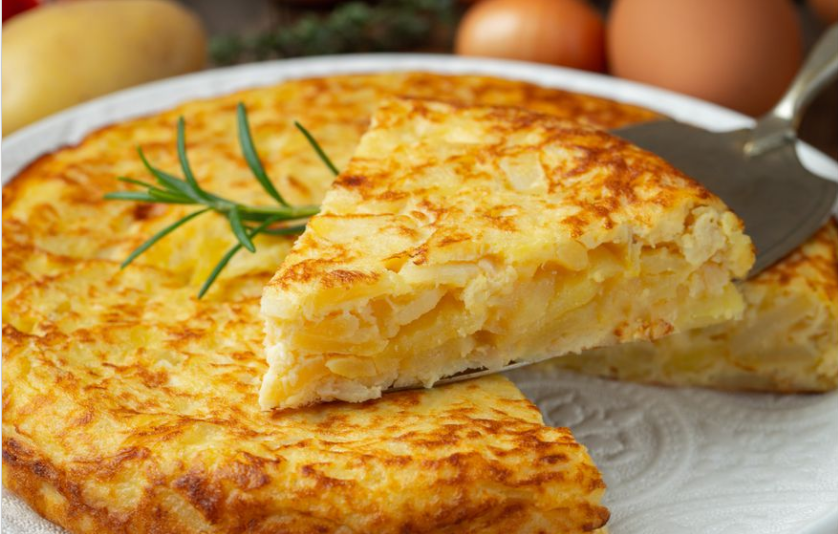

¿De donde proviene la tortilla de papas?
La tortilla de papas se inventó en Extremadura en 1798. Hasta ahora la leyenda del invento (o más bien receta) estaba en Navarra en el año 1835 cuando el general Tomás de Zumalacárregui durante el sitio de Bilbao en la Primera Guerra Carlista. Buscaba un alimento nutritivo y barato para sus tropas. Más bien, el mérito sería para la avispada campesina a la que el militar realizó el encargo. Así lo asegura el experto Javier López Linage en su investigación de 2008. Según las fuentes documentales que ha encontrado, el origen conceptual de la famosa tortilla de patatas está en Villanueva de la Serena, hacia finales del siglo XVIII. «Resulta curioso, cuando edité el libro por primera vez ya había visto ese documento, pero hasta que no he revisado mis papeles no he sido capaz de comprender el alcance real de lo que allí se decía», afirma.
La tortilla de papas son un alimento barato
Como actores principales, coloca a dos hacendados, Joseph de Tena Godoy y Malfeyto y el marqués de Robledo. Como muchos ilustrados, buscaban un alimento nutritivo y barato que aliviara las numerosas hambrunas que asolaban Europa a finales del XVIII. En este sentido, inventaron una especie de ‘tortitas’. La mayor novedad estaba en que se pasaba por la sartén en vez de hornearse. Aunque López Linage habla de «origen conceptual», lo cierto es que se trata prácticamente de lo mismo. Hasta lleva huevos.

Las papas vinieron de América
La patata no fue conocida en Europa hasta que los primeros conquistadores españoles la trajeron de América. Pero a diferencia de otros productos como el tabaco o el cacao, no fue ni mucho menos un éxito. Cuentan las crónicas que llegó más como un artículo exótico que como un alimento nutritivo. Este experto cuenta que a comienzos del XVII ya se vendían papas en la Plaza Mayor de Madrid, pero «desde el punto vista culinario no se sabía muy bien qué hacer con ellas». Era considerada una solución alimenticia poco valorada culinariamente, pero útil para paliar las terribles hambrunas de la época. Sin embargo, el siglo XIX es el que contempló los ensayos más serios de hacer atractiva la patata para paliar las frecuentes hambrunas de la época. O como dice López Linage, «la tortilla de patatas cohesiona más España que muchos artículos de la Constitución».
LOCALIZACION GEOGRAFICA DE CREACION
Ingredientes(Variar segun gusto)
3 papas peladas cortadas en cubos
2 cebollas finamente picadas
1 morrón grande cortado en cubos
6 huevos
1 chorro de aceite
Sal
Pimienta